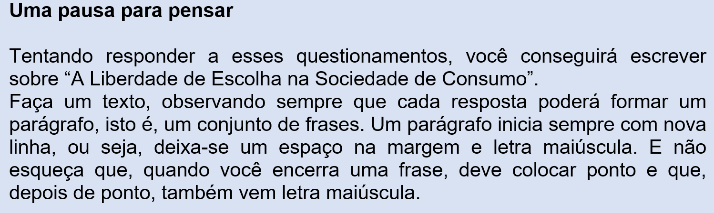
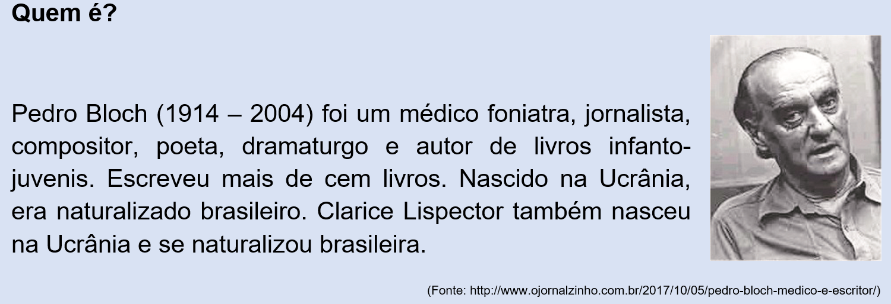
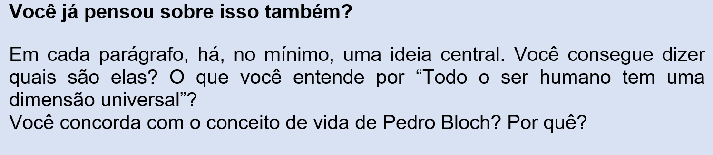

Capítulo 2: Consumo e marketing na Indústria calçadista
Questão-problema:
Na sociedade de consumo, o estilo do sapato é imposto pelo marketing ou há uma escolha do consumidor? O que você pensa sobre isso?
Analise o anúncio publicitário a seguir, de uma loja de calçados:
(Fonte: http://mendescomunicacao.blogspot.com/2015/04/anuncios-do-magazan-no-fim-de-semana.html)
Reconstruindo conhecimentos:
Vamos, juntos, refletir o anúncio publicitário acima?
1. No anúncio, os sapatos expostos dizem que a marca “X” fará você ser uma referência. O que é ser “uma referência”? É transformar-se em um modelo, em um padrão a ser seguido pelos outros. No caso da publicidade apresentada, ser modelo de alguém, de um grupo, faz você “ter poder”. Poder de quê? De seduzir, de conquistar os outros pela elegância, pela beleza dos sapatos...
2. Você, portanto, precisa TER para poder SER. Você concorda com essa afirmação?
3. Você acha que um objeto, como os sapatos, tem este poder? Se você acredita que sim, está dando mais importância ao objeto do que a você mesmo(a). Lembra quando vimos o conceito de fetiche?
4. É claro que os adereços nos ajudam na construção da nossa autoconfiança, mas eles não podem ser a espinha dorsal da nossa personalidade.
5. O que acontece numa sociedade em que impera o consumo é a aceitação do estilo de vida de determinado grupo social particular: o grupo dos ricos, dos que aparentam felicidade, daqueles que estão sempre alegres, daqueles cuja vida é perfeita. Existe isso mesmo? Quem nos faz acreditar nessas fantasias?
6. Quem não quer ser feliz? Por essa e outras, nós escolhemos os produtos ou os produtos nos escolhem? A teoria da autonomia e da soberania do consumidor é verdadeira? Até onde vai o nosso poder de escolha?
7. Os bens que a duras penas conseguimos adquirir têm quase sempre uma vida curta conosco. A graça, a alegria, a almejada felicidade são efêmeras. Quanto tempo dura o prazer da compra?

O texto que você irá ler agora é fundamental para quem precisa ter uma esperança num futuro melhor e que sabe que só pessoas conscientes de sua passagem pelo mundo poderão fazer diferença.
O que Pedro Bloch me disse
(Clarice Lispector)
1. O que as pessoas chamam minha bondade talvez seja minha sintonia com o mundo. Sou coletivo. Tenho o mundo dentro de mim. Acho que todo o ser humano tem uma dimensão universal, única, insubstituível. Por respeito a cada ser humano, em todos cantos da Terra, e por gostar de gente, gostar de gostar, é que encontro em cada indivíduo o reflexo do universo. Desculpe, mas eu gosto até dos que não gostam de mim. Mas gosto dos que gostam.
2. Não sei se sou grande médico, como você diz. Sou teatrólogo famoso porque a estatística o afirma. Mas não sendo grande em nada, ajo como se o fosse. Quando atendo a um paciente, procuro fazer o melhor que posso. Quando escrevo uma peça, acredito que estou fazendo a coisa mais importante do mundo. Mas não sou completo não. Completo lembra realizado. Realizado é acabado. Acabado é o que não se renova a cada instante da vida e do mundo. Eu vivo me completando nos outros, mas falta um bocado.
3. O mundo somos todos nós, responsáveis um a um, um por um, pelo que fizemos do mundo. Só depois de me reconstruir é que eu me sentiria no direito de reconstruir o mundo.
4. Para captar tantas coisas maravilhosas ditas pelas crianças é só ter ouvido de ouvir criança. Confesso que tenho a vaidade de ser “o homem das historinhas de crianças”. Elas afinam comigo, tanto que diferença de idade nem dói. Por isso é que saíram aquelas coisas como “o cor-de-rosa é um vermelho... mas muito devagar”. “Coitado do trenzinho do Pão de Açúcar... está pensando que é avião”, “o gato morreu... porque o gato saiu do gato e só ficou o corpo do gato”. Aprendo com as crianças tudo o que os sábios ainda não sabem.
5. Não sou papa na reabilitação da voz. No mundo em que vivemos, de conhecimentos tão vastos e informação tão constante, ninguém é papa em nada. Só mesmo o próprio. Sinto uma permanente grande responsabilidade. E é por isso que recomeço a cada dia, às cinco da manhã, estudando, duvidando e procurando aprender com quem sabe mais.
6. Sim, todas as minhas peças teatrais, umas 30, foram levadas ao palco. Tive a alegria de saber que uma peça minha, no mesmo dia, era representada em todos os continentes.
7. Que é que acho do amor? Não acho. Amo. Achei: Míriam. As pessoas chamam de amor ao amor-próprio. Chamam de amor ao sexo. Chamam de amor uma porção de coisas que não são amor. Enquanto a humanidade não definir o amor. Enquanto não perceber que o amor é algo que independe da posse, do egocentrismo, da planificação, do medo de perder, da necessidade de ser correspondido, o amor não será amor. O que faz o mundo se mover em sentido construtivo é a verdade. Ainda que provisória. Ainda que seja mais um caminho que meta. Enquanto o homem não marcar um encontro sério consigo mesmo, verá o mundo com prisma deformado e construirá um mundo em que a Lua terá prioridade, um mundo de mais Lua que luar.
8. Já reparei que quando a gente começa a perder a memória é que resolve escrever memórias. Eu ainda a tenho razoável. Quanto a um diário, ele estaria vazio de mim e cheio das pessoas que amo. Por isso prefiro escrever sobre elas e não o meu diário.
9. Fiz uma receita de viver que acho que me revela. Viver é expandir, é iluminar. Viver é derrubar barreiras entre o homem e o mundo. Compreender. Saber que, muitas vezes, nossa jaula somos nós mesmos, que vivemos polindo as grades em vez de libertar-nos. Procuro descobrir nos outros sua dimensão universal e única. Não podemos viver permanentemente grandes momentos, mas podemos cultivar sua expectativa. A gente só é o que faz aos outros. Somos consequência dessa ação. Talvez a coisa mais importante da vida seja não vencer na vida. Não se realizar. O homem deve viver se realizando. O realizado botou ponto final. Tenho um profundo respeito humano. Um enorme respeito à vida. Acredito nos homens. Até nos vigaristas. Procuro desenvolver um sentido de identificação com o resto da humanidade. Não nado em piscina se tenho mar. Gosto de gostar. Não fazer ... me deixa extenuado. Acredito mais na verdade que na bondade. Acho que a verdade é a quintessência da bondade, a bondade a longo prazo. Tenho defeitos, mas procuro esquecê-los a meu modo. “Saber olvidar lo malo también es tener memória”.
10. Se eu acredito em milagre? Mas eu só acredito em milagre. Nada mais miraculosa que a realidade de cada instante. Acredito mais no sobrenatural. O sobre natural seria o natural mal explicado se o natural tivesse explicação. Gilberto Amado anotou essa frase minha. Deve ser boa.
11. Não há mérito em eu amar Míriam, porque nela encontro todas as mulheres do mundo. Ela me acompanha em tudo. No trabalho – é a minha colaboradora melhor na reabilitação da voz – na vida, em tudo. Ela é tão despida de egoísmo que chega às raias do desumano. Nunca vi de Míriam um gesto, uma palavra, uma atitude que não fosse para o bem dos outros.
12. Eu poderia dizer que gosto de todo o mundo ... até de mim.
(LISPECTOR, Clarice. A Descoberta do Mundo. Rio de Janeiro: Rocco, 1999, p. 472.)

O futuro é o que ainda é realidade
Tem um ditado que diz mais ou menos assim: “O passado já foi e o futuro ainda não veio; por isso, o mais importante é o presente.” Pode ser verdadeiro esse pensar, mas a humanidade dança nesses três tempos, pois lembra e relembra o passado para que ele possa muitas vezes ser referência do presente e projetar sua vida para o futuro, o amanhã, o mês que vem, o próximo ano, o próximo século.
Em relação aos tempos verbais, já estudamos o presente e os três pretéritos do modo indicativo, o modo que nos passa uma “certeza” de que os fatos ocorreram ou não, de que ocorrem ou não. Neste capítulo vamos estudar o tempo futuro do modo indicativo, aquele tempo que ainda não chegou, mas que tudo indica que virá ou, então, que viria.
Temos dois tipos de futuro no Indicativo: o futuro do presente e o futuro do pretérito.
Futuro do Presente
Vamos usar o futuro do presente, principalmente
1. para indicar fatos prováveis ou certos que ainda não aconteceram:
O curso começará amanhã.
O mês que vem, mudaremos de casa.
Nunca diga “desta água não beberei”.
Quando crescer, o que serei?
Se não vieres depressa, acharás tua casa destruída!
2. Para exprimir dúvida:
Quem faz este barulho? Será um ladrão?
3. Como expressão de desejo ou de ordem:
“Honrarás pai e mãe.” (Deves honrar pai e mãe)
Futuro do pretérito
Parece contraditório o nome “futuro do passado”. Como assim? É futuro ou é pretérito? Antigamente (acho que até a década de 1960), ele se chamava “condicional”. O conceito é o mesmo, só mudou o nome: um fato que ainda não tinha ocorrido, mas só iria acontecer dependendo de outro fato.
Tipo assim: “Se eu fosse rico, compraria uma casa maior.”
Para comprar uma casa maior (ela não foi comprada ainda) seria preciso antes ser rico.
Então, emprega-se o futuro do pretérito, principalmente
1. Nas afirmações condicionadas, quando se referem a fatos que não se realizaram e que, provavelmente não se realizarão:
Se tivessem feito o que a mãe mandou, isto não teria acontecido.
2. Para exprimir a incerteza (a probabilidade, a dúvida, a suposição) sobre fatos passados:
Quem seria aquela bela mulher que estava perto do caixão chorando?
Ele teria o quê... talvez uns treze anos quando tudo aconteceu?
Para entender mais:
[INSERIR VÍDEO SESI EDUCA] 504_LP_ENS_FUN_F7_06_DT
Praticando:
1. Complete as lacunas, usando o futuro do presente dos verbos entre parênteses:
a) (Ser) ________ todos nós, responsáveis um a um, um por um, pelo que fizermos ao mundo.
b) Só depois de me reconstruir é que eu me (sentir) __________ no direito de reconstruir o mundo.
c) Os sapatos, eu os (calçar) __________ só depois de me vestir.
d) Desse jeito, tu não (escrever) _____________ nenhum poema.
e) Ele disse que amanhã (começar) ____________ todos os cursos.
f) A casa (estar) ___________ totalmente vazia. Tu (dever) __________ decorá-la de acordo com teu gosto.
g) Quem arranha assim a porta? (Ser) ________ o gato da vizinha?
2. Complete agora com o futuro do pretérito:
a) Os sapatos, eu os (calçar) __________ se me servissem.
b) Se meu avô pudesse me ver, (ficar) ___________ orgulhoso de mim.
c) Se os senhores pudessem, quem (convidar) ______________ para viajar?
d) Se seus pais deixassem, você (ir) __________ comigo voar?
e) Vocês (casar) ______________ com um homem desse feitio?
f) Sem sua interferência, nós (perder) ______________ nosso emprego.
g) Que móveis o senhor me (sugerir) ______________ para minha sala de estar?
h) Sem sua ajuda, eles não (conseguir) ______________ decorar todo o texto.
i) Se tivesse estudado o bastante, Marcos (estar) ___________ hoje presidindo a firma de seu pai.
O que aprendi:
- Verbos no futuro do modo indicativo: futuro do presente e futuro do pretérito
- O futuro do presente: para indicar fatos prováveis ou certos que ainda não aconteceram; para exprimir dúvida; como expressão de desejo ou de ordem.
- O futuro do pretérito: Nas afirmações condicionadas, quando se referem a fatos que não se realizaram e que, provavelmente não se realizarão; Para exprimir a incerteza (a probabilidade, a dúvida, a suposição) sobre fatos passados.